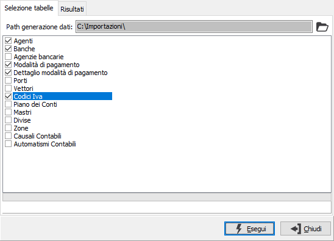
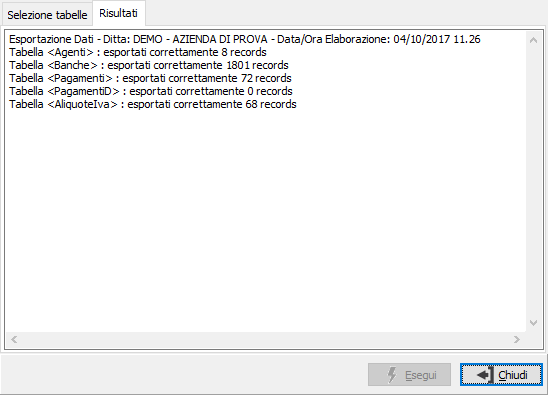

Esportazione tabelle
La procedura consente di esportare i dati relativi a tabelle di OS1 su file sequenziale.

PATH GENERAZIONE DATI: indica il percorso in cui saranno generati i file relativi alle tabelle esportate. Tramite il pulsante Cartella è possibile selezionare direttamente il percorso desiderato.
La spunta accanto al nome della tabella ne consente l'esportazione.
La pressione del pulsante Esegui, seguita da una richiesta di conferma, dà inizio all'operazione di esportazione che riporta i dati delle tabelle selezionate e visualizza nella pagina Risultati l'esito dell'operazione.
